Control E
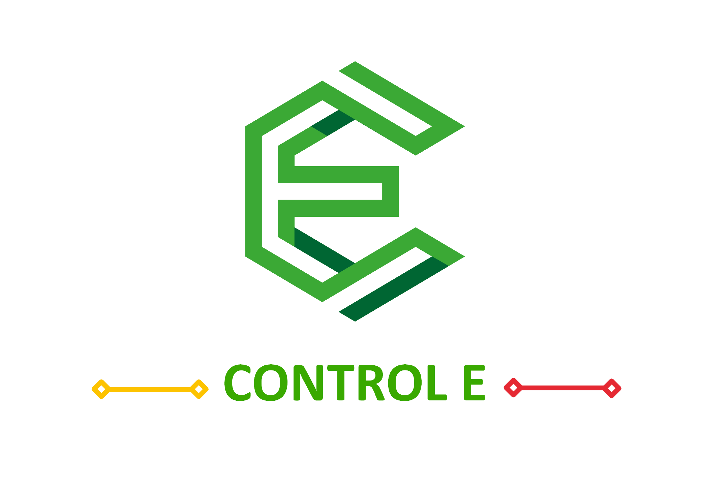
Aplicación web desarrollada durante el programa Apoyo de Monitorías para gestionar el ingreso y egreso de elementos en el SENA Regional Casanare.
Tecnologías: Laravel, PHP, PostgreSQL, Bootstrap, Bulma
Ver repositorio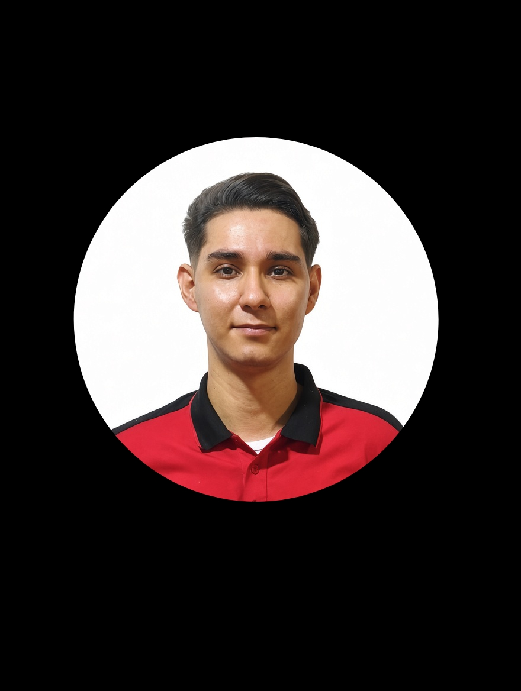
Desarrollador web full-stack en formación con experiencia en proyectos reales del SENA Casanare. Manejo frameworks modernos, bases de datos y control de versiones con GitHub.
*NOTA IMPORTANTE: Podrás ver mi portafolio también en dispositivos móviles.

Aplicación web desarrollada durante el programa Apoyo de Monitorías para gestionar el ingreso y egreso de elementos en el SENA Regional Casanare.
Tecnologías: Laravel, PHP, PostgreSQL, Bootstrap, Bulma
Ver repositorio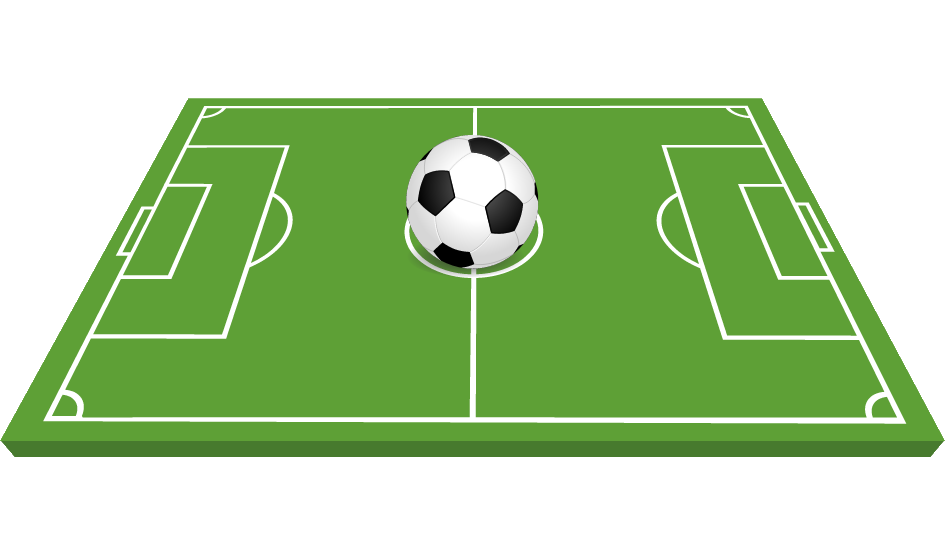
Proyecto de grado desarrollado con arquitectura de 3 capas (Frontend, API Middleware, API REST CRUD) para la gestión de reservas de canchas de fútbol sintéticas.
Tecnologías: Angular 19, Gin, PostgreSQL y PWA
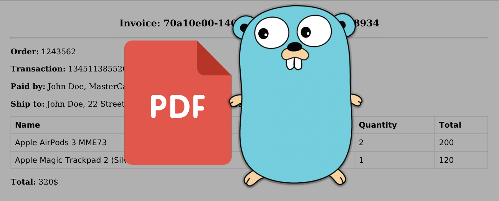
Programa en Golang para generar facturas en formato PDF para un minimarket. Usa la librería gofpdf.
Ver repositorioUna app web que acercará a Dios a muchas personas ateas, escépticas y que tienen un corazón duro. Sin imponer, sin obligar y sin ninguna mala intención, pero sí hablando con la verdad.
Tecnologías: HTML, CSS, JavaScript y CDN Icons.
Ver sitio webSoy Tecnólogo en Análisis y Desarrollo de Software, con capacidad para optimizar procesos tecnológicos y organizacionales mediante soluciones TIC. Me desempeño como desarrollador web full stack junior, con conocimientos sólidos en HTML, CSS , JavaScript , Python y PHP . Tengo experiencia práctica con frameworks modernos como Angular (v19) , React (v19) , Laravel y Gin , y administro bases de datos relacionales con PostgreSQL . Utilizo Git Bash y GitHub para control de versiones y trabajo colaborativo, aplicando metodologías ágiles orientadas a la entrega continua de valor.
También he participado en el desarrollo de aplicaciones web reales para el SENA Regional Casanare, como una plataforma de control de ingreso y otra de gestión de alquiler de canchas con arquitectura de tres capas.
Manejo buen inglés técnico en desarrollo de software.
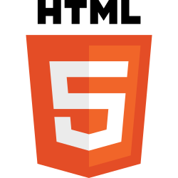
HTML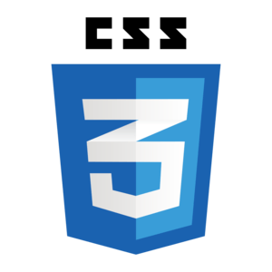
CSS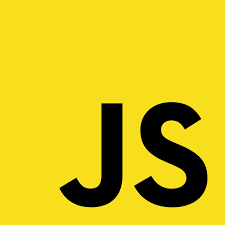
JavaScript PHP
PHP
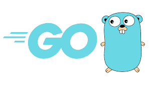
Go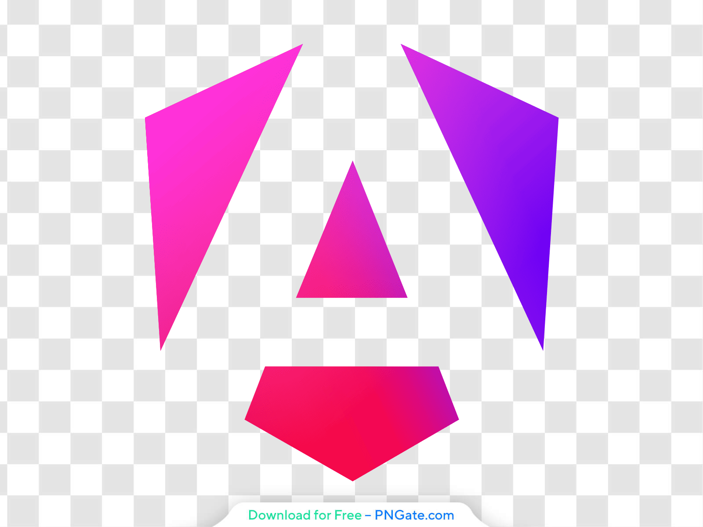
Angular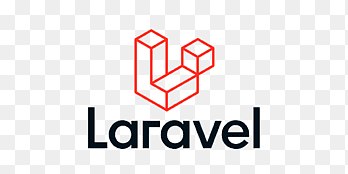
Laravel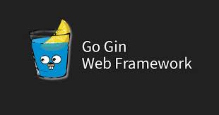
Gin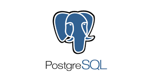
PostgreSQL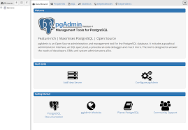
pgAdmin 4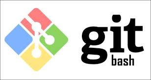
Git Bash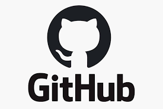
GitHub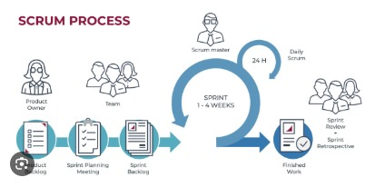
Scrum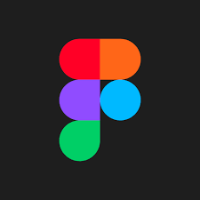
Figma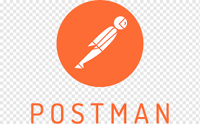
Postman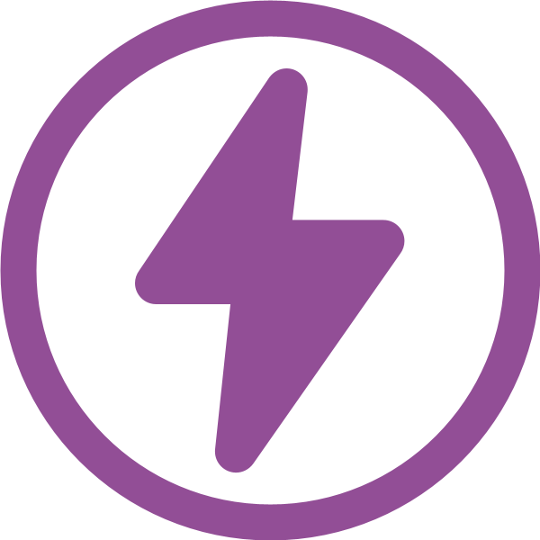
Thunder Client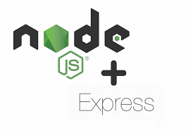
Node.js y Express.js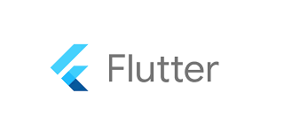
Flutter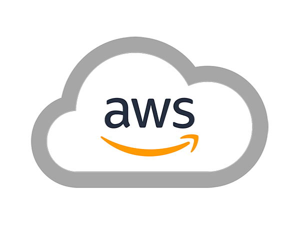
AWS Cloud